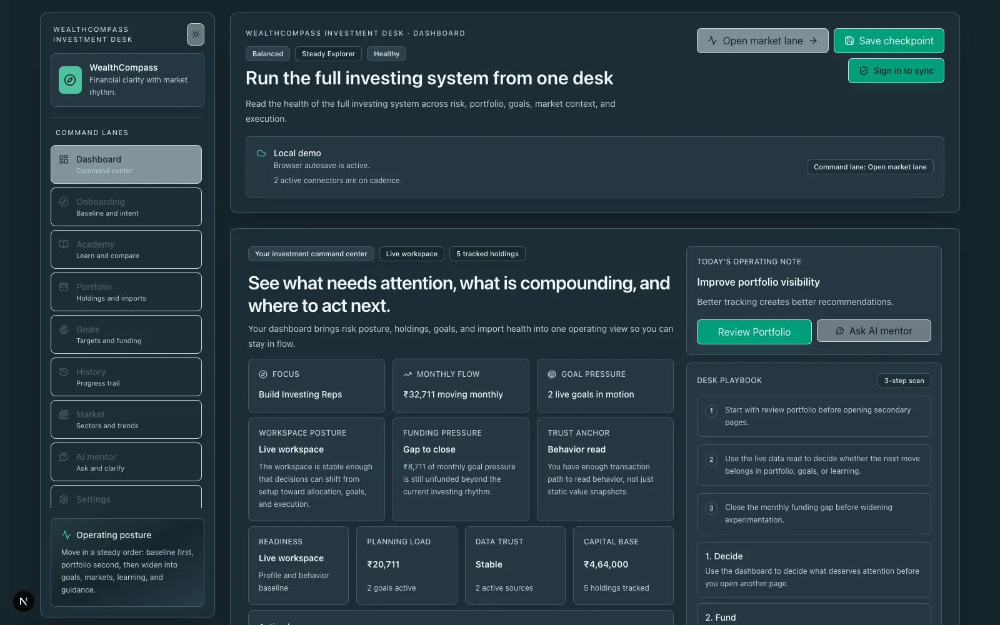
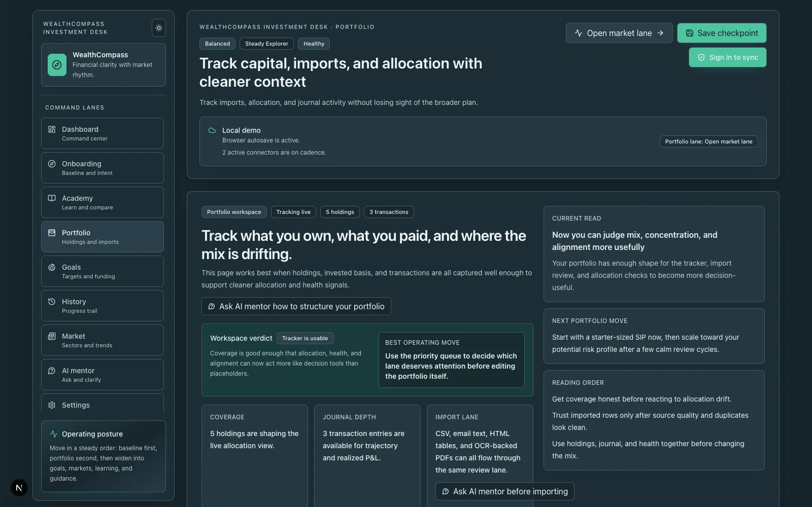
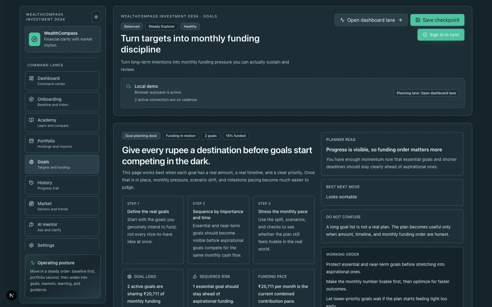
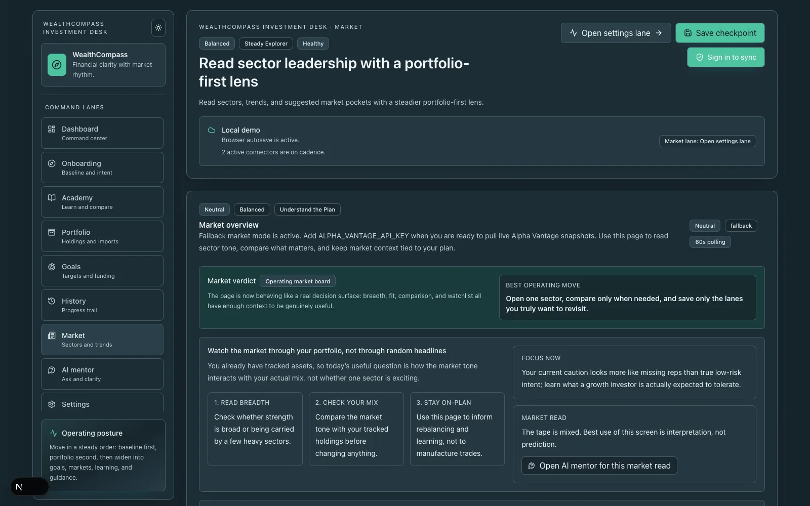

Next.js + TypeScript
Componentized dashboard workflows and route handlers.
A free-first investment companion making risk, portfolios, financial goals and market context understandable for beginner investors.
Most investment tools assume financial fluency. Beginners need explanations, planning support and portfolio feedback without immediately requiring paid data or broker integrations.
WealthCompass combines onboarding, risk profiling, education, portfolio tracking, multi-goal planning, market context and mentor guidance in a local-first workspace.
Profile → Risk score → Learning → Portfolio → Health rules → Goals → Market context → Mentor → Cloud sync
Four primary product views show how the workspace moves from a single financial command center to portfolio detail, disciplined goal funding, and a portfolio-first market read.




Componentized dashboard workflows and route handlers.
Useful without credentials, with authenticated cloud sync when configured.
Deterministic risk, health and goal engines provide reliable fallbacks.
Extracted modules cover scoring, imports, mappings and planning.
Local storage and fallback market data keep the product demonstrable without external accounts.
CSV and JSON import/export, statement review and transaction history reduce lock-in.
Normalized inputs, mapping tests and sync states make external failures visible and recoverable.
Rules, imports, OAuth state, broker and inbox adapters, Supabase mapping, cloud sync and two Playwright journeys are represented.
Server boundaries cover risk, imports, market snapshots, mentor, broker connections, inbox connections and scheduled synchronization.
HMAC-verified OAuth state, server-only provider secrets, Supabase authentication and RLS-ready data modeling constrain integration access.
Core portfolio, risk and goal workflows remain useful when cloud, market or AI providers are absent or unavailable.
Local and cloud modes reduce external dependency risk, but require explicit hydration, reconciliation and visible sync states.
GitHub Actions runs clean installation, linting, the test suite and a production Next.js build on pushes and pull requests.
Risk, holdings, goals, education and market context are spread across tools that assume financial fluency.
A local-first workspace connects those decisions and selectively upgrades to authenticated integrations.